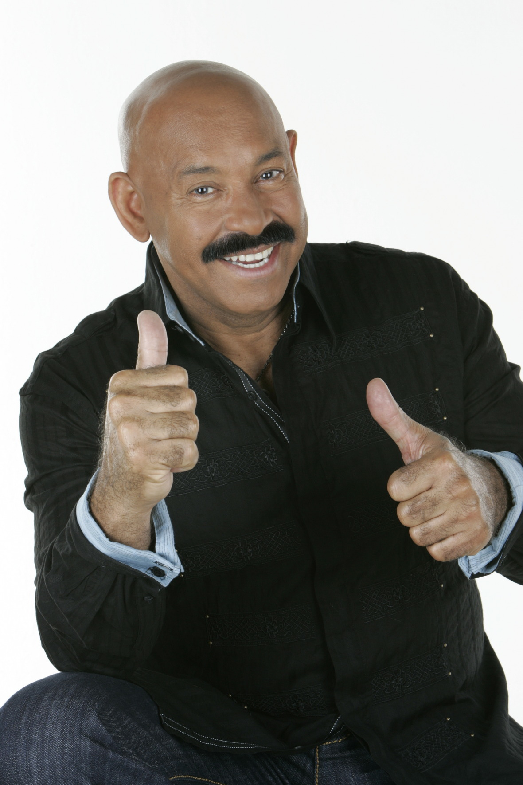

| Foto | Datos | Foto |
|---|---|---|
|  | Óscar Emilio León Simosa, conocido artísticamente como Óscar D'León, es un cantautor y músico venezolano de son y música caribeña, considerado uno de los mayores exponentes de la salsa. Nació en Caracas, Venezuela, el 11 de julio de 1943. A lo largo de su carrera, se ha ganado apodos como "El Sonero del Mundo", "El Sonero Mayor" y "El Faraón de la Salsa".
Comenzó su carrera musical a la edad de 28 años. En 1972, formó la agrupación Dimensión Latina junto a César Monje, Elio Pacheco, José Rodríguez, Rojitas y Chuito, y al año siguiente grabaron su primer álbum, logrando el éxito con el tema "Pensando en ti". Con la banda, alcanzó notoriedad con canciones como "Llorarás". En 1976, se separó de Dimensión Latina para emprender una carrera como solista y formó su propia orquesta, La Salsa Mayor. Con esta nueva etapa, continuó cosechando éxitos y consolidando su posición como una figura central del género. Es conocido por su habilidad como bajista autodidacta y por bailar con su instrumento en el escenario. A lo largo de su carrera, ha grabado más de 50 álbumes y colaborado con artistas de renombre. Ha recibido múltiples reconocimientos, incluyendo el Premio Grammy Latino a la Excelencia Musical en 2013, siendo el primer venezolano en obtenerlo. En 1998, la ciudad de Nueva York declaró el 15 de marzo como el Día de Óscar D'León. También ha recibido doctorados honoris causa y las llaves de varias ciudades. | 
|